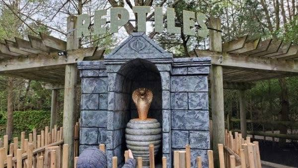

The Herpetarium
Columbus Zoo & Aquarium · Photo Tour #11

Photo Tours #11, The Herpetarium-Columbus Zoo & Aquarium, even though this is really a Reptile House, I called it Herpetarium mainly cause well there are Amphibians in the Building as well,
The Historic Building First Opened in 1967 it houses a diverse collection of reptiles and amphibians, including snakes, turtles, lizards, and even axolotls. It is one of the oldest buildings at the zoo and features a unique, 16-sided design. The building was renovated in 1998 to create a more comfortable and colorful environment for visitors, with a 1998 renovation.
When you first enter, you will see the entry Galley and see animals like the Green Mamba, Axolotl, Tortoises, Kenyan Sand Boas, Turtles, Frogs and Lizards, after all that you entered the deserts to see Reptiles like the Scrub Python & other Australian Python Species along with Spitting Cobras, Beaded Lizards, Newly Arrived Aruba Island Rattlesnakes & a mix of Spiny-Tailed & Grand Cayman Blue Iguanas,
right after the Iguanas you will find the Florida Cottonmouth, More Rattlesnakes, Crocodile Lizards with Geckos, several species of Poison Dart Frogs & Prehensile Skinks,
Next is the Flooded Forest to find multiple species of Turtles like the Annam Turtle, Fly-River Turtle, Mata-Mata Turtle & Alligator Snapping Turtle along with their roommates like the Webber's Lizard, Merten's Monitor & Smooth-Fronted Caiman along with freshwater Stingrays,
Next is the Rainforests, and home to Majesty the King Cobra, Malgasy Hognose Snakes, South American Lizards & Turtles, Cape Cobras, McCord's Box Turtles with Blood Pythons & also another New Arrival of a Mangrove Snake,
right after them and the Asian Rat Snake display is the North America section for Timber Rattlesnakes with Eastern Box Turtles & Black Rat Snakes but also for the Eastern Massasauga's, Lake Erie Water Snakes, A mix of San Esteban Island Chuckwallas, Desert Whiptail Grassland Lizards & Gila Monsters and then the final displays shows more Black Rat Snakes with Canebrake & Eastern Diamondback Rattlesnakes,
This has to be one of the Biggest reptile collections i've ever seen, but i know one thing though, more larger reptile collections are on the way.
Louie posted this on Facebook — open the original post →